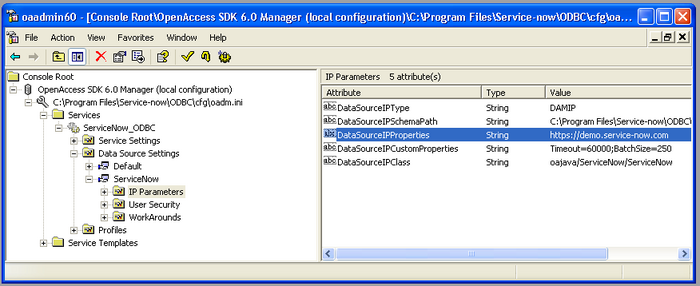
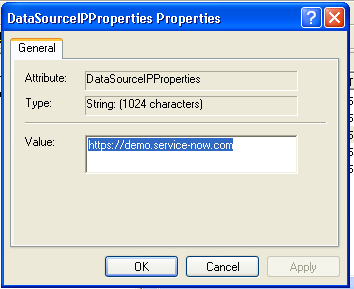
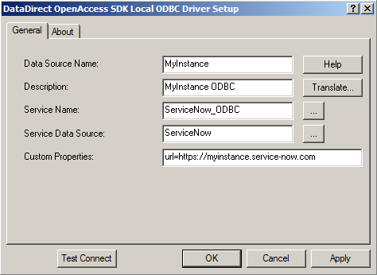

Configuring the ODBC Driver
| |
Note: This article applies to Fuji. For more current information, see ODBC Driver at http://docs.servicenow.com
The ServiceNow Wiki is no longer being updated. Please refer to http://docs.servicenow.com for the latest product documentation. |
Contents
1 Overview
After installing the ODBC driver, configure it to connect to your ServiceNow instance and to communicate through a proxy server if applicable, and set properties to control ODBC behavior.
2 Configuring the Driver
After the driver is installed, configure it for your instance. The driver is preconfigured to connect to https://demoodbc.service-now.com using the DSN ServiceNow. There are two ways to configure connectivity for the driver.
- Configure the global default used by all newly created DSNs.
- Configure each new DSN with its own connection.
2.1 Global Default
A default DSN is preloaded with the ODBC driver installation ServiceNow data source. This preloaded DSN connects using the default connection URL, which is set to https://demo.service-now.com. To change the global default for the instance URL:
- In Windows, navigate to Start > Programs > ServiceNow ODBC > Management Console.
- Expand the Console Root tree using the following path:
- OpenAccess SDK 6.0 Manager\<installation location>\Services\ServiceNow_ODBC\Data Source Settings\ServiceNow\IP Parameters
- 
- Double-click the DataSourceIPProperties attribute for the ServiceNow data source setting to open the Properties dialog box.
- Change the value to the URL of your instance, using the following format, and then click OK:
- https://<your instance>.service-now.com
- 
{kind=link}
{kind=link}
2.2 Creating a New DSN
Using the ODBC driver and the ServiceNow data source, you can create an unlimited number of DSNs configured to connect with different instance URLs. This allows the flexibility of selecting the target instance for your ODBC connection by DSN name. As an option during installation or upgrade, you can elect to keep the DSNs when you uninstall.
- In Windows, navigate to Start > Programs > Service-now ODBC > ODBC Administrator.
- To create a system DSN, select the System DSN tab, and then click Add.
- Select Service-now ODBC Driver 32-bit from the list, and then click Finish.
- Configure the driver and its connection URL by specifying the url= parameter value in the Custom Properties field. For example:
- url=https://myinstance.service-now.com
- 
- Click OK.
- You can now use the new driver.
{kind=link}
{kind=link}
{kind=link}
2.3 Using a Connection String
You can specify a connection string instead of defining a DSN. The connection string must follow this format:
Driver=ServiceNow ODBC Driver 32-bit;ServiceName=ServiceNow_ODBC;UID=youruser;PWD=yourpassword;ServerDataSource=ServiceNow;CustomProperties=url=https://<instance>.service-now.com
The driver name varies depending on if you use the 32-bit or 64-bit version of the ODBC driver. To determine your driver version:
- In Windows, navigate to Start > Programs > Service-now ODBC > ODBC Administrator.
- Select the System DSN tab.
- Note value in the Driver column for the ServiceNow data source.
3 Configuring ODBC to Use Proxy Servers
The ODBC driver can be configured to route its HTTP SOAP requests via an HTTP proxy server. Setting up a proxy server gives you the option to control access to the ServiceNow instance from the proxy server, and potentially allows a network configuration that can monitor usage statistics. However, because the proxy server intercepts the ODBC driver's requests to your ServiceNow instance, it will degrade the performance of the driver.
| |
Note: This feature is recommended for use with ODBC driver builds dated 7/15/2011 or later. |
To enable the use of proxy servers, the custom properties for proxy server settings must be defined first for the data source. After that, these properties can be overridden by specific ODBC DSNs. To do this, run the ODBC Management Console.
{kind=link}
The following custom properties configure the ODBC proxy server.
| Property name | Description | Example |
|---|---|---|
| proxy_host | The proxy server host name or IP address. | proxy.company.com |
| proxy_port | The proxy server port number. | 8080 |
| proxy_user_name | The proxy server user name or id, used in an authenticating proxy configuration. | odbc_user |
| proxy_user_password | The proxy server user password, used with the proxy_name value in an authenticating proxy configuration. | ***** |
4 Setting Properties
The following properties customize connectivity and optimize the query behavior of the ODBC driver.
4.1 ODBC Administrator Properties
These properties are specified in the ODBC Data Source Administrator for the DSN or in the Custom Properties field of the login dialog box.
| Property Name | Description | Default |
|---|---|---|
| BatchSize | During fetching of results from the instance, this batch size configures the number of records to fetch for every request. Typically, the default is an optimal number for normal sized rows. If an error occurs during fetching of records that indicates this value should be lowered, you can modify it to optimize memory usage versus performance. | 2000 |
| url | This is the ServiceNow instance URL or endpoint. It should indicate the URL to the ServiceNow instance you want to connect to. | https://demo.service-now.com |
| EnablePassThrough | During processing of aggregate functions, enabling pass through mode allows directly calling Aggregate Web Service for optimized and speedy response. Whenever possible, this mode should be left enabled. | true |
| debug | By default, debugging messages are not produced. Set debug to true when you operate the ODBC driver from the ISQL console window to write all HTTP-related network communication traffic to the console window. When using this option, set gzip to false so that data is not compressed. Otherwise, the data is unreadable. | false |
| gzip | By default, data sent over the network is compressed. Set gzip to false when using the debug parameter to write network communication to the ISQL console so that data is not compressed. | true |
| timeout | Specifies the socket inactivity timeout value in seconds. | 175 |
| retries | Number of times to retry the failing request in the event of a socket timeout error. | 0 |
| mode | The query mode used to parse complex where clauses. You can configure the ODBC driver query mode to use either AND or OR operators. The AND operator is available starting with the ODBC 1.0.8 release. While the OR operator provides the greatest compatibility with complex queries, the AND operator is usually more efficient and results in fewer database operations. | or |
If you need to use more than one of these properties in your connection, concatenate the settings with a semicolon (;) delimiter. For example, the following string sets the URL to a specific instance and changes the batch size to 200 records.
- url=https://demo1234.service-now.com;BatchSize=200
4.2 ODBC Management Console Properties
You can access these properties from the ODBC Management Console available in the Windows Start menu at ServiceNow ODBC > Management Console.
| Property name | Description | Default |
|---|---|---|
| ServiceJVMOptions (Services\Service Settings\IP Parameters) |
JVM command line properties and option. For example, to change the maximum Java heap size, modify the -Xmx150m parameter. | -Xms64m -Xmx150m |
| DataSourceIPProperties (OpenAccess SDK 6.0 Manager\<installation location>\Services\ServiceNow_ODBC\Data Source Settings\ServiceNow\IP Parameters) |
Global default of the instance URL for all ODBC connections. For more flexibility, you may also create new DSNs with default URL configurations. See ODBC Administrator Properties. | https://demo.service-now.com |
4.2.1 Service JVM Options
You can specify these values within the ServiceJVMOptions parameter in addition to standard JVM arguments such as -Xmx.
| Property name | Description | Default |
|---|---|---|
| -DLOG_FILE_NAME | The location of the ODBC log file. This property is available starting with the ODBC Driver 1.0.7.1 release. | ${user.home}\AppData\Local\ServiceNow\odbc\logging\odbc.log |
| -DLOG_LEVEL | The logging level used when writing to the ODBC log file. You can specify the logging level using Logback levels, such as TRACE, INFO, or ERROR. This property is available starting with the ODBC 1.0.8 release. | INFO |
4.3 Instance Properties
An administrator can configure these properties by adding a property or modifying an existing one in the ServiceNow instance.
| Property name | Description | Default |
|---|---|---|
| glide.db.max.aggregates | The maximum number of rows returned by aggregate functions. | 100000 |
| glide.db.max_view_records | The maximum number of rows returned by a database view. | 10000 |
5 Testing the ODBC Driver
After configuring the ODBC driver, test the configuration to ensure that you can connect to the instance and perform queries.